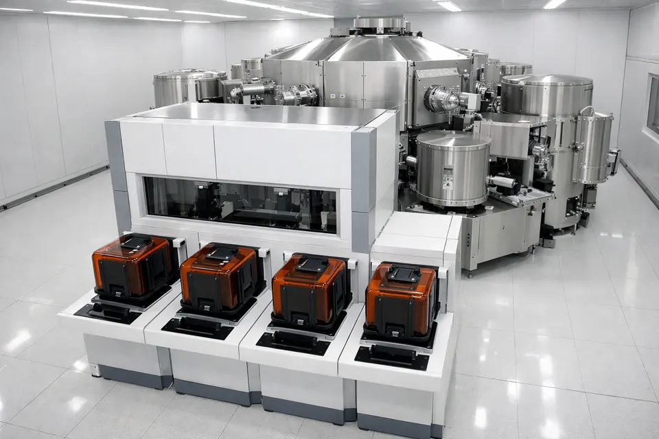

토리첼리가 수은 기둥으로 대기압을 쟀더니 760 mm를 떠받쳤습니다. 그 1 mm가 1 Torr(≈133 Pa). 1 기압 ≈ 101 kPa.
760 → 76 → 7.6 → 0.76 … 압력이 1/10이 될 때마다 "한 decade". 760에서 0.01까지는 약 4.9 decade. 진공은 늘 로그 눈금으로 봅니다.
| 어디 | 대략의 압력 |
|---|---|
| 우리가 사는 곳 | 760 Torr |
| Load Lock 배기 목표 (시뮬) | 0.01 Torr |
| 식각 공정 챔버 (공정 중) | 수 ~ 수십 mTorr |
| 고진공 증착 챔버 (바탕) | 10⁻⁶ Torr 이하 |
웨이퍼가 지나는 문 구멍을 약 34 cm × 5 cm = 0.017 m² 라 하면
101,000 Pa × 0.017 m² ≈ 1,700 N ≈ 175 kg.
안쪽이 진공이면 바깥 공기가 문을 이만큼 밀어 붙입니다.
① 진공 붕괴 — TM·챔버 전체 오염, 복구에 몇 시간. ② 급격한 기류 — 웨이퍼가 미끄러지거나 날아감. ③ 먼지 — 바닥과 벽의 파티클이 진공 쪽으로 휩쓸려 들어감.
소프트웨어 인터록(알람으로 거부)에 더해, 실제 장비는 하드웨어 배선으로도 한쪽이 열려 있으면 다른 쪽 밸브에 공기·전기가 안 가게 막습니다(13강).
V = 방 부피(L), S = 펌프의 실효 배기 속도(L/s). 펌프는 "매초 같은 부피"를 빼니, 남은 공기의 같은 비율이 매초 빠져나갑니다.
공기는 금방 빠지지만, 벽에 달라붙은 수분은 조금씩 떨어져 나오며(탈가스) 압력을 받칩니다. 그래서 곡선 끝이 눕습니다.
습한 공장 공기로 벤트하면 벽에 물이 다시 붙어 다음 배기가 느려집니다. 마른 질소(N₂)로 채우는 이유입니다.
Load Lock은 대기 ↔ 거친 진공만 오가므로 러핑(건식) 펌프 하나로 뺍니다. 터보·크라이오 같은 고진공 펌프는 TM·공정 챔버에 붙어, 그쪽 깊은 진공을 지킵니다.
정상 펌프는 1초마다 압력을 1/50로 줄입니다. 그래서 760 → 0.01 Torr 가 약 2.9초(실제 장비는 수십 초).
시뮬은 700 Torr부터 대기측 문을 허가합니다. 실제 장비는 대기와 거의 같아졌다는 스위치 신호를 기다립니다(앞의 175 kg 계산을 떠올리세요).
| 압력 | 의미 | 허가되는 것 |
|---|---|---|
| 760 Torr | 대기압 · Vent 목표 | — |
| ≥ 700 Torr | 대기로 본다 | 대기측(ATM) 밸브 열기 |
| ≤ 1 Torr | 진공으로 본다 | 진공측(TM) 밸브 열기 |
| 1.0E-2 Torr | Pump Down 목표 | 배기 완료 로그 |
| 9초 | 배기 제한시간 | 넘으면 ALM-701 |
| 코드 | 하려던 동작 | 거부 이유 |
|---|---|---|
| ALM-311 | 대기측(ATM) 밸브 열기 | 압력이 700 Torr 미만 — 아직 대기압이 아님 |
| ALM-314 | 진공측(TM) 밸브 열기 | 압력이 1 Torr 초과 — 아직 진공이 아님 |
| ALM-312 / 315 | 한쪽이 열린 채 다른 쪽 열기 | 양쪽 동시 개방 금지 |
| ALM-308 / 309 | Pump Down | 대기측 / 진공측 밸브가 열려 있음 |
| ALM-310 | Vent | 진공측 밸브가 열려 있음 — TM에 질소가 들어감 |
| ALM-303 / 304 | EFEM / 진공 로봇이 Load Lock으로 Extend | 그쪽 밸브가 닫혀 있음 |
| ALM-313 / 316 | 밸브 닫기 | 로봇 팔이 Load Lock 안에 들어가 있음 |
| 증상 | 원인 후보 | 가르는 관찰 |
|---|---|---|
| ALM-701 | 펌프 성능 저하 | 곡선 기울기가 완만(τ가 큼). 펌프를 멈추면 압력이 그대로 머문다 |
| ALM-701 | 누설(Leak) | 펌프를 멈추면 압력이 직선으로 계속 오른다 |
| 느린 끝부분 | 탈가스(수분) | 멈추면 오르다가 점점 눕는다 |
| 311 / 314 / 303 | 사람의 순서 문제 | 압력값·밸브 상태 — 완료 전에 눌렀나? |
목표까지 뺀 뒤 펌프 쪽 밸브를 닫고(격리) 1~2분 압력을 봅니다. 상승 모양이 원인을 말해 줍니다. 상승률 × 방 부피 = 새어 드는 양(누설률, mTorr·L/s).
배기 20초 + 벤트 15초 + 밸브·로봇 출입 25초 = 60초(예시). Load Lock 하나에 한 장씩이면 아무리 빨라도 시간당 60장이 상한입니다. 공정 챔버가 놀아도 웨이퍼가 못 들어갑니다.
① Load Lock 두 개 — 하나가 배기하는 동안 다른 하나로 넣고 뺀다. ② 여러 장을 한 번에 — 배기 한 번에 여러 장. ③ 배기 시간을 줄이는 펌프·부피 설계.
한 번에 25장을 넣는 큰 Load Lock(부피 10배)과, 한 장짜리 작은 Load Lock 두 개. 배기 시간과 시간당 장수를 숫자로 비교해 어느 쪽이 나은지 주장해 보세요.
① 잰 배기 시간 = ___초 · 계산값 2.9초와 차이 ___
② 한 decade = ___초 · 1 Torr 도달 = ___초
③ 부피 4배면 ___초 → ALM-701? ___
④ 큰 것 하나 vs 작은 것 둘: ______ (근거 ______)
① 진공일 때 Load Lock 문이 안 열리는 진짜 이유는? → 바깥 대기가 문을 민다(≈175 kg). 인터록은 그 위험을 막는 장치.
② 방 부피가 2배가 되면 배기 시간은? → τ = V/S 이므로 2배.
③ 701 뒤 격리했더니 압력이 직선으로 오른다 → 누설. 오르다 눕는다 → 수분(탈가스).